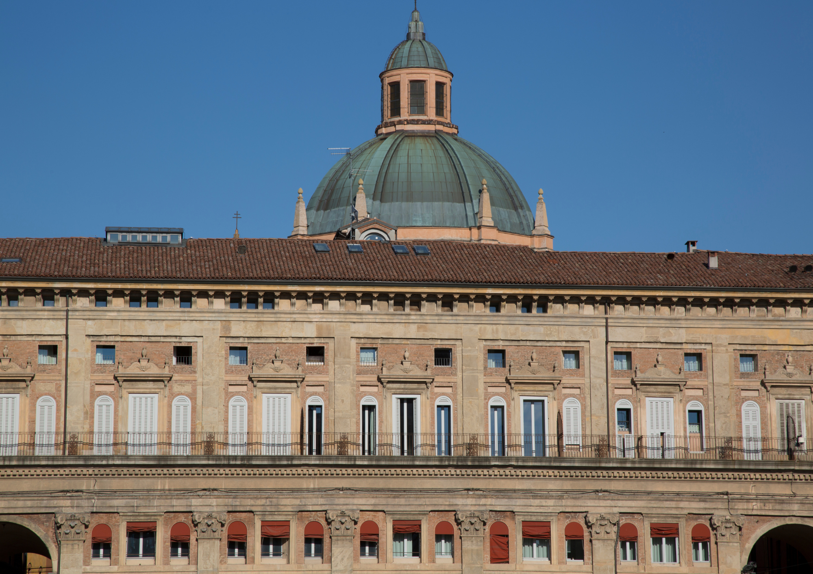

Historical Sites
Bologna, often called "La Dotta, La Grassa, La Rossa" (The Learned, The Fat, The Red), is a city known for its rich history, delicious cuisine, and distinctive red rooftops. Here are some must-visit historical sites:
1. Piazza Maggiore

Piazza Maggiore is the main square of Bologna and the heart of the city's historic center. Surrounded by medieval and Renaissance buildings, including the majestic Basilica of San Petronio, it is a popular gathering place for locals and visitors alike. Take a stroll through the square, admire the beautiful architecture, and soak up the lively atmosphere.
Don't forget to visit the Neptune Fountain located in the square, a masterpiece of Renaissance sculpture.
Opening Hours: Daily, 24 hours
Admission: Free
2. Two Towers
The Two Towers, Asinelli and Garisenda, are iconic symbols of Bologna's medieval past. Built in the 12th century as defensive structures, they offer panoramic views of the city and surrounding countryside from their lofty heights. Climb the narrow stairs to the top of the Asinelli Tower for an unforgettable experience.
Opening Hours: Daily, 9:00 AM - 7:00 PM
Admission: €5 for Asinelli Tower
3. Archiginnasio of Bologna
The Archiginnasio of Bologna is a historic building that once housed the University of Bologna, the oldest university in the world. Built in the 16th century, it is renowned for its stunning anatomical theater, where medical students once observed dissections. Today, the building houses the Archiginnasio Municipal Library and is open to visitors interested in Bologna's academic heritage.
Guided tours are available.
Opening Hours: Monday to Saturday, 9:00 AM - 6:00 PM
Admission: €5
Local Cuisine
Bologna is famous for its rich culinary tradition, which includes hearty pasta dishes, flavorful sauces, and savory meats. Here are some dishes you must try:
1. Tagliatelle al Ragu
This classic Bolognese pasta dish features long, flat ribbons of egg pasta served with a rich and meaty ragu sauce. It's the ultimate comfort food and a staple of Bologna's gastronomy.
Price Range: €10 - €15 per serving
2. Tortellini en Brodo
These small, ring-shaped pasta parcels are typically filled with a mixture of meat, cheese, and herbs, then served in a flavorful broth. They're perfect for warming up on a chilly day.
Price Range: €8 - €12 per bowl
3. Mortadella
This famous Italian cured meat, similar to bologna sausage, is a specialty of Bologna. Made from finely ground pork, seasoned with spices, and studded with cubes of fat, it's delicious sliced thin and served on crusty bread.
Price: €5 - €10 per sandwich
Available at local markets and delis
Nightlife
Bologna boasts a vibrant nightlife scene, with a wide range of bars, clubs, and live music venues to suit every taste. Here are some places to experience the city's nightlife:
1. Via del Pratello
This lively street is lined with bars, cafes, and restaurants, making it a popular destination for locals and visitors alike. Join the crowds of students and young professionals as they enjoy drinks and live music late into the night.
Opening Hours: Daily, from 7:00 PM to 2:00 AM
2. Strada Maggiore
Located in the historic center of Bologna, this bustling street is home to numerous bars and pubs, offering everything from craft cocktails to local beers. Enjoy a leisurely stroll and stop by your favorite spots along the way.
Opening Hours: Varies by establishment
3. Cantina Bentivoglio
This iconic jazz club has been a fixture of Bologna's nightlife scene for decades. Enjoy live jazz performances by local and international artists while sipping on fine wines and sampling gourmet appetizers.
Opening Hours: Tuesday to Sunday, from 8:00 PM to 2:00 AM
Admission: Free entry; prices vary for drinks and food